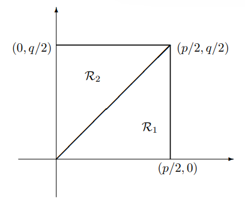

Theorem 9.5.1 . Quadratic Reciprocity Law.
If \(p\) and \(q\) are distinct odd primes, then
\begin{equation*}
(p/q)(q/p)=(-1)^{\frac{p-1}{2}\frac{q-1}{2}}.
\end{equation*}
To establish this theorem we just count the integer points in the rectangle in the following figure.

Figure 9.5.2. Note that there are
\begin{equation*}
\frac{p-1}{2}\cdot \frac{q-1}{2}
\end{equation*}
integer points in the whole square. Now the equation of the diagonal line is \(y =\frac{q}{p}x.\) To find the number of integer points in \(\mathcal{R}_1\) we first note that the number of integers in the interval \(0 \lt y \lt kq/p\) is \(\lfloor kq/p\rfloor.\) So for \(1\leq k \leq (p- 1)/2\) we have \(\lfloor kq/p\rfloor\) in \(\mathcal{R}_1\) over the point \((k, 0).\) Thus the number of points in \(\mathcal{R}_1\) is
\begin{equation*}
\sum_{k=1}^{(p-1)/2}\left\lfloor\frac{kq}{p}\right\rfloor.
\end{equation*}
Similarly, the number of points in \(\mathcal{R}_2\) is
\begin{equation*}
\sum_{j=1}^{(q-1)/2}\left\lfloor\frac{jp}{q}\right\rfloor,
\end{equation*}
and so
\begin{equation*}
\frac{p-1}{2}\cdot \frac{q-1}{2}=\sum_{k=1}^{(p-1)/2}\left\lfloor\frac{kq}{p}\right\rfloor+\sum_{j=1}^{(q-1)/2}\left\lfloor\frac{jp}{q}\right\rfloor.
\end{equation*}
Applying Gauss' Lemma we have
\begin{align*}
(p/q)(q/p) \amp=(-1)^{\sum_{k=1}^{(p-1)/2}\lfloor \frac{kq}{p}\rfloor}(-1)^{\sum_{j=1}^{(q-1)/2}\lfloor \frac{jp}{q}\rfloor}\\
\amp=(-1)^{\sum_{k=1}^{(p-1)/2}\lfloor \frac{kq}{p}\rfloor +\sum_{j=1}^{(q-1)/2}\lfloor \frac{jp}{q}\rfloor}\\
\amp=(-1)^{\frac{p-1}{2}\cdot\frac{q-1}{2}}.
\end{align*}
Corollary 9.5.3 .
If \(p\) and \(q\) are odd primes, then
\begin{equation*}
(p/q)(q/p)=
\begin{cases}
1 \amp \hspace{5mm} if \hspace{2mm} p\equiv 1\pmod{4} \hspace{2mm} or \hspace{2mm} q\equiv 1\pmod{4}\\
-1 \amp \hspace{5mm} if \hspace{2mm} p\equiv q\equiv 3\pmod{4}.
\end{cases}
\end{equation*}
Another way to think about this, and probably the most helpful, is that if \(p\) or \(q\) is congruent to \(1\) modulo \(4,\) then
\begin{equation*}
(p/q) = (q/p),
\end{equation*}
and if \(p\) and \(q\) are both congruent to \(3\) modulo \(4,\) then
\begin{equation*}
(p/q) = -(q/p).
\end{equation*}
Consider the congruence
\begin{equation*}
x^2\equiv 15\pmod{89}.
\end{equation*}
Note that
\begin{equation*}
(15/89) = (3/89)(5/89) = (89/3)(89/5) = (2/3)(4/5) = (-1)(1) = -1,
\end{equation*}
so there is no solution to the congruence; that is, \(15\) is not a quadratic of \(89.\)
Theorem 9.5.5 .
If \(p\neq 3\) is an odd prime, then
\begin{equation*}
(3/p)=
\begin{cases}
1 \amp \hspace{5mm} if \hspace{2mm} p\equiv \pm 1\pmod{12}\\
-1 \amp \hspace{5mm} if \hspace{2mm} p\equiv \pm 5\pmod{12}.
\end{cases}
\end{equation*}
Consider \((3/p).\) Note \(3 \equiv 3\pmod{4},\) and also that either \(p \equiv 3\pmod{4}\) or \(p \equiv 1\pmod{4}.\) Also either \(p \equiv 1\pmod{3}\) or \(p \equiv 2\pmod{3}.\)
Suppose \(p \equiv 1\pmod{4},\) then
\begin{equation*}
(3/p) = (p/3).
\end{equation*}
If \(p \equiv 1\pmod{3};\) that is, \(p \equiv 1\pmod{12}.\) Then
\begin{equation*}
(3/p) = (p/3) = (1/3) = 1.
\end{equation*}
If \(p \equiv 2\pmod{3};\) that is, \(p \equiv 5\pmod{12}.\) Then
\begin{equation*}
(3/p) = (p/3) = (2/3) = -1.
\end{equation*}
Now suppose \(p \equiv 3\pmod{4},\) then
\begin{equation*}
(3/p) = -(p/3).
\end{equation*}
If \(p \equiv 1\pmod{3};\) that is, \(p \equiv 7\equiv -5\pmod{12}.\) Then
\begin{equation*}
(3/p) = -(p/3) = (1/3) = -1.
\end{equation*}
If \(p \equiv 2\pmod{3};\) that is, \(p \equiv 11\equiv -1\pmod{12}.\) Then
\begin{equation*}
(3/p) = -(p/3) = (2/3) = 1.
\end{equation*}